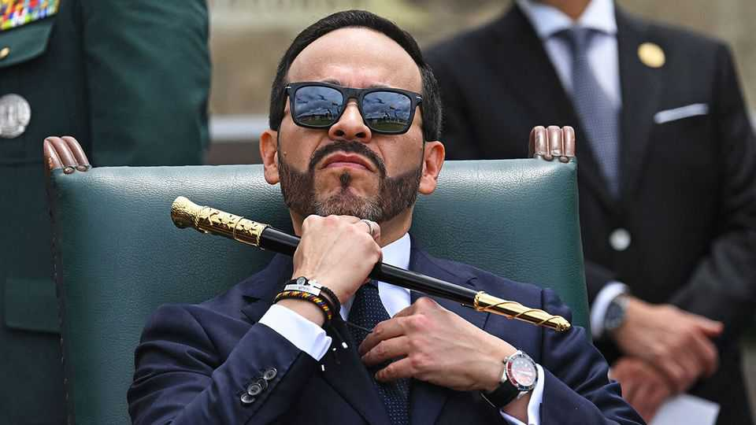

Colombia’s El Tigre is taking no prisoners
Drug lords and social-justice warriors are in the president’s sights

Nov 12th 2026
Pistol on belt and walkie-talkie in hand, President Abelardo de la Espriella strides along with security forces on night-time raids. Alleged criminals, paraded in handcuffs, are struck dumb. Colombia’s new sheriff taunts them, then packs them off to jail with one of his signature lines: Bienvenido a la Patria Milagro—“Welcome to the Miracle Nation.”
The videos posted to the president’s social-media channels provide a gratifying show for Colombians tired of crime. Mr de la Espriella, a flamboyant right-wing populist who calls himself El Tigre, promised an iron fist and rip-roaring growth. Approaching 100 days in power, the Tiger has got started on both.
But it will take more than TikTok videos to break the influence that armed groups which run drug-trafficking and illegal mining operations hold over swathes of the country—and certainly more to tackle Colombia’s fiscal crisis. Meanwhile Mr de la Espriella’s illiberal instincts have set him on a collision course with Congress and the courts. And the left-wing coalition that lost to him by less than one percentage point in the presidential run-off is encouraging his critics onto the streets.
Mr de la Espriella’s government entered office at a time of calamity. Three days after his inauguration an earthquake struck Colombia, killing more than 300 people and causing over $13bn of damage. Mr de la Espriella and his ministers responded in a telegenic manner. They visited the affected areas and promised a “Miracle Fund” for reconstruction (which in fact has been slow to materialise).
Since then, security has been Mr de la Espriella’s main concern. Under Gustavo Petro, his leftist predecessor, armed groups expanded, security deteriorated and cocaine production hit new highs. Mr de la Espriella has scrapped peace talks attempted under Mr Petro, which had failed to make progress. He has stepped up bombardments of armed groups, killed several high-ranking gangsters and signed off on extraditing some individuals to face prosecution in America. All of this is recounted in a daily stream of self-aggrandising online content, some of it grotesque. Mr de la Espriella crows over the body bags of those killed in operations.
Many Colombians welcome the change in narrative. But the increase in operations has been “modest”, says Javier Flórez of the Ideas for Peace Foundation, a think-tank. “It’s essentially the same: captures, kills, seizures.” A different strategy will be needed to break the power of criminals who reign over parts of Colombia. After security forces killed one ringleader in September, the late kingpin’s gang declared a lockdown of Santa Marta, a coastal city, as a show of force; it told businesses to close and residents to stay at home. Mr de la Espriella flew in with the armed forces and had fighter jets rip through the skies. Locals stayed inside, nonetheless.
The government wants new tools to swat enemies. A “submission law” rules out peace talks but offers reduced sentences to criminals who confess, hand over assets and turn informant. A proposed anti-terrorism statute would let the executive designate terrorist groups and freeze the assets of anyone collaborating with them. Elizabeth Dickinson of International Crisis Group, an NGO, sees these policies as “carrot and stick”. Human-rights groups worry that Colombian leaders might also use the stick to intimidate civil society.
Mr de la Espriella has a limited budget for security and other operations. Public debt is about 60% of GDP. Without action, the government projects a fiscal deficit of 9.4% of GDP in 2027. Debt service will swallow almost a quarter of the budget. So difficult is the situation that his government is talking to the IMF about a loan programme, which could perhaps be worth $20bn (4% of GDP). At the end of October the government unveiled a tough tax-and-spending reform. It would cut the number of goods eligible for special lower rates of VAT, broaden the income-tax base, cut the state payroll by one-fifth and also give the president powers to trim spending by decree. Corporate-tax rates would fall from 35% to 31%; big new investors would get a rate of 20% for 16 years. Fiscal conservatives were pleasantly surprised. “It’s not what you expect from a populist,” says Mauricio Cárdenas, a former finance minister.
But getting it passed will not be easy. Mr de la Espriella’s party has only a handful of seats in Congress. There is a nominal pro-government majority, but Mr de la Espriella claims not to want to do the usual trading of jobs and resources for political support. Rafael Nieto, a senator from the right-wing Democratic Centre, says the government wants to impose bills, not debate them. His party, the largest, is wary of tax rises. José Manuel Restrepo, the vice-president, has said Colombia could default if the bill is not passed. “Now we’ll really see the capacity of the president, beyond the spectacle,” says Mr Cárdenas.
So far Mr de la Espriella has shown little desire to compromise. In October he appointed as interior minister (responsible for managing Congress) Alejandro Ordóñez, an ultra-Catholic former attorney-general who burned books in his youth. The choice fits the president’s call—alongside his tubthumping on security—for a “cultural counter-revolution” to restore traditional values. Mr de la Espriella has arranged for dozens of works related to feminism, sexual diversity and Colombia’s peace processes to be removed from the National Museum. He signs off messages with “Long live Christ the King!”, despite court warnings about the state’s religious neutrality. The hope seems to be that a culture war will galvanise Mr de la Espriella’s base before regional elections in October next year. “It creates soldiers for the cause,” says Luis Ernesto Gómez, a former deputy minister of interior.
In this and much else, Mr de la Espriella is following Donald Trump. Colombia has joined the “Shield of the Americas”, the United States-led military coalition waging war on the region’s drug-traffickers. America has sent drones to help hunt them down. Colombia has also signed on to Mr Trump’s anti-globalist agenda. It withdrew a candidate for the International Criminal Court, and may leave the court altogether.
Mr de la Espriella shares Mr Trump’s thin skin. He fired the head of the statistics agency, apparently for saying he found no evidence that Mr Petro’s government had fiddled labour-market figures. Critical journalists have lost their jobs. “There’s clearly a far-right authoritarian populist tendency,” says Mr Nieto, the senator. “But there’s still time to correct.”
The streets are already heating up. The Historic Pact, the left-wing opposition, will join unions and students for a national strike against spending cuts on November 19th. About 60,000 demonstrators took part in anti-government protests last month. Mr de la Espriella dismissed them as a “small minority that wants to stop Colombia”. As the numbers grow, that line will be harder to hold. ■